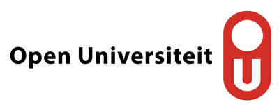

| Home | Submission | Committee | Program | Contact |
Artificial Intelligence (AI) with its learning techniques, including Machine Learning (ML) and Deep Learning (DL), shows a significant evolution in data processing and analysis that is rapidly changing human life. AI-based solutions have already been used in many real-world applications, including but not limited to, the Internet of Things/Vehicles (IoT/ IoV), Smart Grid and Energy saving, Fog/Edge computing, Face/Image recognition, Text/Sentimental analysis, Attack detection, and Healthcare. While AI has worldwide applications, yet unsecure, biased, unreliable, and privacy violating data processing and communication negatively affect its applications (and consequently the society). Accordingly, International Workshop on Private, Secure, and Trustworthy AI (PriST-AI) co-located with ESORICS 2023 aims to bring researchers and professionals across academia and industries to exchange ideas, present early results, and provide future visions on Private, Secure, Trustworthy AI.
The topics of interest are included, but not limited to:
• Privacy preserving machine learning, deep learning, and federated learning
• Trustworthy machine learning
• Metrics in private, secure, and trustworthy AI
• Adversarial attacks against AI models
• Cryptography and security protocols in AI
• Privacy by design in AI-based systems
• Applications of private, secure, and trustworthy AI
Submission deadline: July 5, 2023 (Extended to July 10, 2023)
Notification date: July 28, 2023 (Postponed to August 1, 2023)
Camera ready: September 10, 2023
Workshops date: September 29, 2023
|
|
|
 |